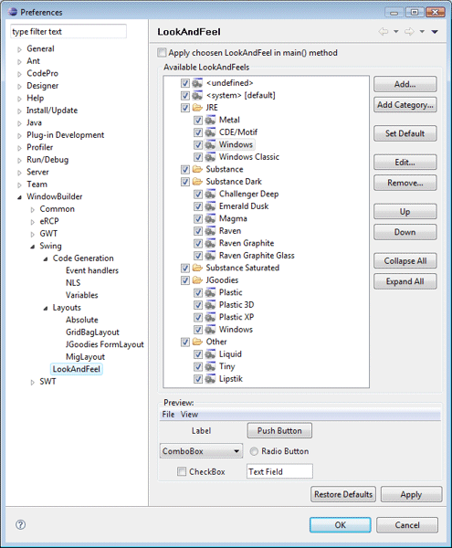
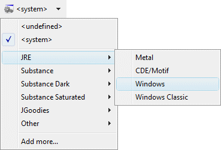
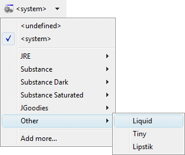
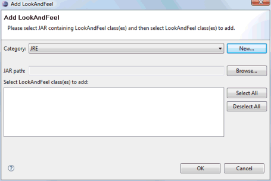

|
 This page is used to control various Swing > LookAndFeel options. Any look and feel types listed on this page will show up in Designer's toolbar in the look and feel drop down list.  
You can add more looks by clicking on the Add button and specifying the look you want to add in the Add LookAndFeel dialog that appears. To edit a look, select it and click on Edit. To remove a look, select it click on Remove. To set a look as the default look used in Designer, select the look and click on the Set Default button.  Apply chosen LookAndFeel in main() methodThis preference determines whether Designer adds code to set the selected Look and Feel in the main() method. For example:
|